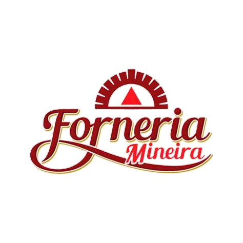
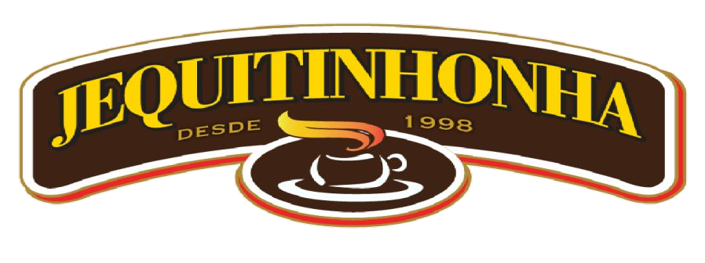
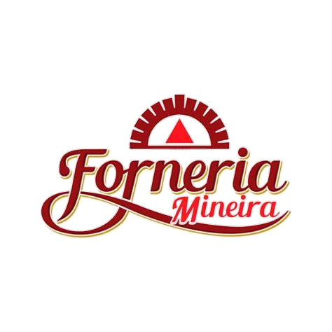
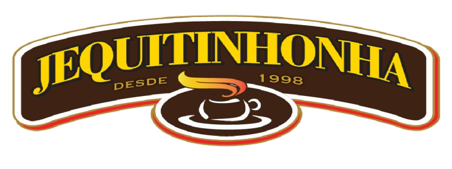

Gestão de Processos: O Que É e Como Implementar BPM na Sua Empresa
Descubra como a Gestão de Processos pode transformar sua empresa, aumentando a eficiência, reduzindo custos e garantindo melhorias contínuas!
Publicado em 30/03/2025
Unimos controladoria, gestão de processos e RH estratégico para fortalecer sua empresa, impulsionar resultados e garantir um crescimento sustentável.
 





Como tudo começou:
Nossa historia comecou quando a nossa equipe de especialistas apaixonadas por finanças, processos e gestão de pessoas.
Reconhecendo que o sucesso sustentavel de uma empresa depende de uma base financeira robusta e de uma gestão eficiente ded processos, juntamos nossas expertises
para formar a E R Controladoria Estratégica
Nossa Missão:
A E R Controladoria Estratégica é uma parceira confiavel para empresas de diversos setores oferecendo soluções
de controladoria, gestão de processos e RH Estratégico. Nosso compromisso vai além ded resolver problemas imediatos: preparamos
as empresas para um crescimento sustentável e duradouro.
Nossa missão é impulsionar empresas a atingirem seu maximo potencial, promovendo praticas financeiras solidas, Processos
otimizados e uma gestão de pessoas que valoriza o talento e o desenvolvimento continuo
A E R Controladoria Estratégica nasceu da união de especialistas apaixonadas por finanças, processos e gestão de pessoas. Combinando suas expertises, criaram uma consultoria focada em oferecer soluções estratégicas para empresas de diferentes setores. Nossa missão é ser uma parceira confiável, promovendo práticas financeiras sólidas, processos eficientes e uma gestão de pessoas voltada para o desenvolvimento contínuo sempre com foco no crescimento sustentável dos negócios.
A gestão de processos é também conhecida como Gerenciamento de Processos de Negócio (BPM). O BPM é um conjunto de práticas administrativas que visa aprimorar o desempenho dos processos organizacionais. Clique para saber mais
1. Mapeamento de Processos
2. Análise de Processos
3. Desenho de Processos Melhorados
4. Automatização de Processos
5. Definição de Indicadores de Desempenho (KPIs)
6. Monitoramento e Controle
7. Gestão de Mudanças
8. Ciclo de Melhoria Contínua
9. Garantia da Conformidade
10. Feedback e Melhoria
Prevenção de perdas e gestão de estoques são práticas fundamentais para aumentar a eficiência e reduzir desperdícios nas empresas. Trata-se de um conjunto de estratégias e ações voltadas para minimizar perdas financeiras, operacionais ou de recursos dentro da empresa. Clique para saber mais
1. Mapeamento e Controle de Estoques
2. Análise de Dados e Previsão de Demanda
3. Treinamento e Capacitação de Equipes
4. Gestão de Riscos e Prevenção de Fraudes
5. Identificação de Causas de Perdas
6. Rotatividade de Estoque (PEPS/PVPS)
7. Parcerias com Fornecedores
8. Tecnologia na Prevenção de Perdas
9. Indicadores de Desempenho (KPIs)
10. Sustentabilidade e Redução de Desperdícios
Controladoria é uma área estratégica dentro das empresas que tem como principal função planejar, acompanhar e analisar as operações financeiras e administrativas, garantindo a eficiência e a saúde econômica da organização. Clique para saber mais
1. Contabilidade Gerencial
2. Orçamento Empresarial
3. Gestão de Indicadores de Desempenho (KPIs)
4. Análise de Rentabilidade
5. Gestão de Riscos
6. Compliance e Governança
7. Auditoria Interna
8. Análise de Cenários
9. Gestão Tributária
10. Tecnologia e Automação
O RH Estratégico posiciona o departamento de Recursos Humanos como um parceiro chave nas estratégias organizacionais. Ele vai além das funções tradicionais, alinhando práticas de RH com as metas da empresa. Clique para saber mais
1. Planejamento Estratégico de Pessoas
2. Gestão por Competências
3. Recrutamento e Seleção Estratégicos
4. Engajamento e Cultura Organizacional
5. Desenvolvimento e Treinamento
6. Gestão de Clima e Bem-Estar
7. Remuneração e Benefícios Estratégicos
8. Gestão de Diversidade e Inclusão
9. Gestão de Dados e People Analytics
A NR-1, com o GRO e PGR, é vital para a segurança e saúde no trabalho. A integração da psicologia organizacional promove um ambiente equilibrado e produtivo, reduzindo custos e melhorando a imagem da empresa. Clique para saber mais
1. Mapeamento dos fatores que podem afetar a saúde mental dos colaboradores
2. Análise do grau de impacto e da chance de ocorrência de cada risco
3. Registro detalhado das informações coletadas
4. Inclusão dos riscos psicossociais no Programa de Gerenciamento
5. Atualizações frequentes do documento
6. Ações práticas voltadas à melhoria do clima organizacional
As tendências no RH, como inteligência artificial e People Analytics, melhoram processos e decisões. Iniciativas de Employer Branding criam ambientes colaborativos e otimizam resultados estratégicos. Clique para saber mais
1. RH 5.0: Explorando as novas tecnologias
2. People Analytics: Utilizando dados para melhorar desempenho
3. O RH Ágil: Adaptando as práticas de RH
4. Plano de Carreira: Desenvolvendo os talentos
5. Gestão de Conflitos: Como lidar com situações desafiadoras
6. Upskilling e Reskilling: O RH como Propulsor
7. RH Data-Driven: Decisões Estratégicas
8. ROI do RH: Medindo o Impacto das Práticas

Descubra como a Gestão de Processos pode transformar sua empresa, aumentando a eficiência, reduzindo custos e garantindo melhorias contínuas!
Publicado em 30/03/2025
Você sabia que uma gestão ineficiente de estoques pode estar custando caro para sua empresa?
Publicado em 30/03/2025
Descubra como o RH Estratégico pode transformar sua empresa, alinhando gestão de pessoas e objetivos corporativos para alcançar resultados extraordinários!
Publicado em 30/03/2025